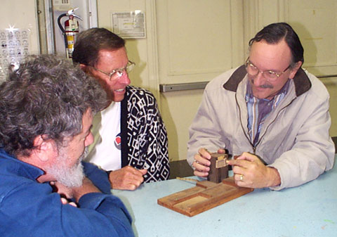
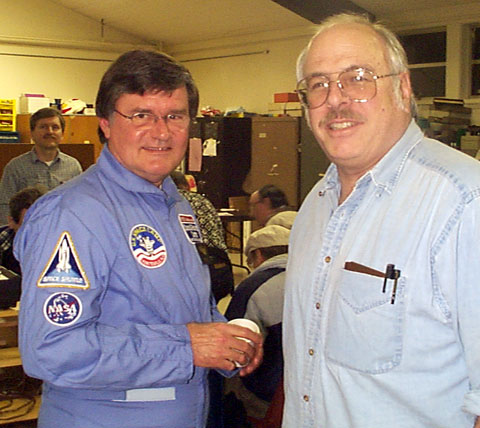
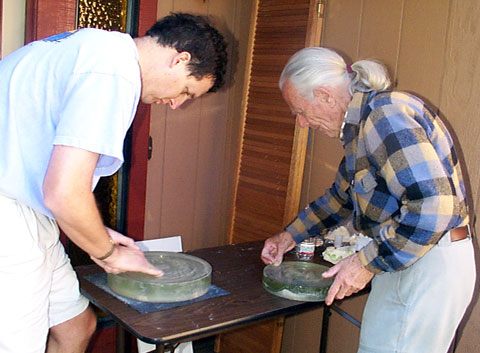

SJAA Ephemeris February 2001 |
SJAA Home |
Contents |
Previous |
Next
SJAA Ephemeris February 2001 |
SJAA Home |
Contents |
Previous |
Next
Photos and Tidbits
Lost and Found: Paul Mancuso brought a foucoult tester (made in the 1950's) to the January SJAA General Meeting. SJAA member (and one of the club founders) Walt Krumm made the tester, and Paul used it when testing his first mirror - a 6 inch f/5 high school project. Paul found the tester and some of Walt's calculations when cleaning out a closet recently. Photo by Jane Houston Jones
|

|
Jane Houston Jones and Dr. Jeff Moore discuss the Galileo project at the January SJAA general meeting. Photo by Morris Jones

|
Fellow lunatics Craig Wandke (left) and Robert Garfinkle trade notes on the Apollo space program at the January SJAA general meeting. Craig presented slides from his trip to Space Camp in Huntsville, Alabama. Photo by Morris Jones
|

|
SJAA member Alex Crichton works with John Dobson to do final figuring on his 12.5" mirror. Alex participated in John's Fall 2000 classes at the California Academy of Sciences, and completed his mirror here at a "telescope finishing party" held by Jane Houston Jones and Morris Jones. Alex showed his completed 12.5" dobsonian at a recent January Houge Park star party. Photo by Morris Jones.
|

|
Mail to:
Editors
Copyright © 2001 San Jose Astronomical Association
Last updated:
February 05, 2002
Previous | Contents | Next